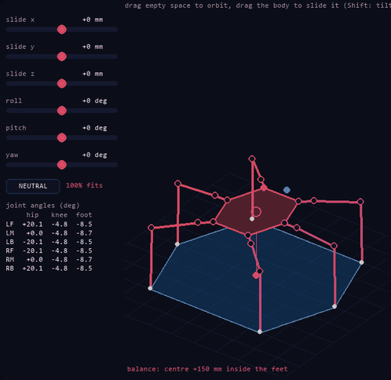
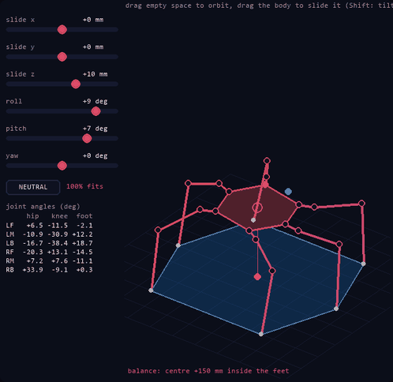
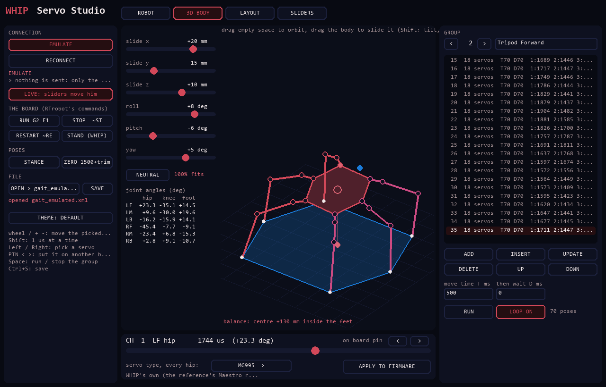
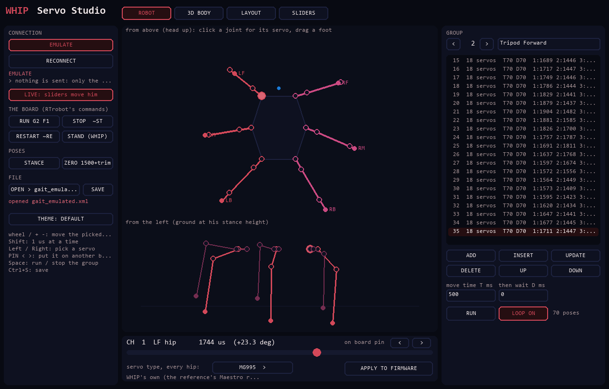
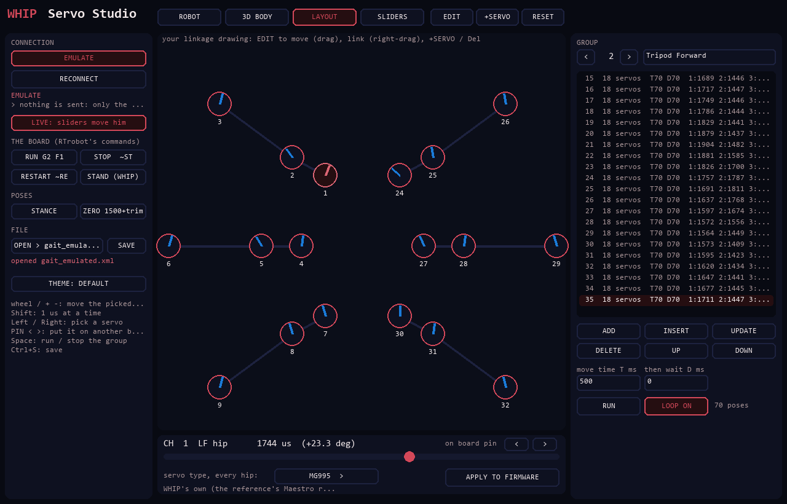
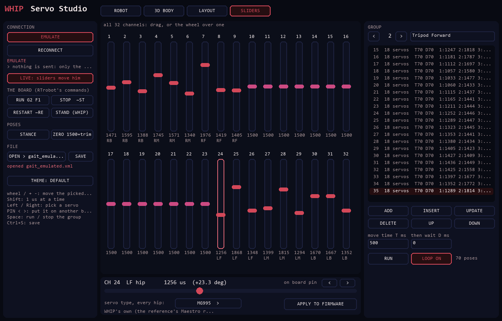
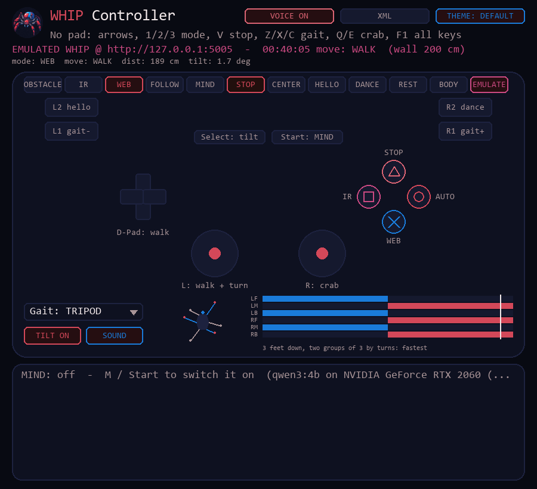
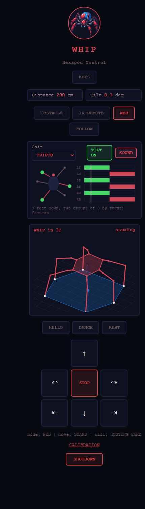

Overview
Six legs, eighteen joints
Gaits
Six of them: tripod, ripple, wave, quad, amble and metachronal, worked out by inverse kinematics with smooth foot swings, each checked to keep his centre inside his feet. He walks, turns, crabs sideways and follows the sticks with speed.
Body IK
His body slides and tilts over planted feet: from the controller's BODY mode, the PS2 pad (R3), his /body, or Servo Studio's 3D view.
A PS2 pad on him
Its 9-pin receiver straight on four pins of his ESP32: the sticks steer his gaits, mid-step.
Servo Studio
His servos as sliders, as your own linkage drawing, and as WHIP in 3D; groups, RTrobot XML, his servo board's commands, servo types written into his firmware.
He talks
Through the controller's PC, outside MIND too: theatrical, a show-off, secretly scared of tripping over his own feet.
Obstacle mode
Walks on his own, 5 s after power-on, until something is within 35 cm, then looks left and right, turns the clearer way and carries on once it's clear past 50 cm.
Tilt safety
Past 20° of pitch or roll he stops and stands, and resumes once he's back under 12°. Picked up, his legs freeze until he's put down.
IR remote
Arrows walk and turn while held. He stands when you let go.
Browser & gamepad
A control page on port 5005, and a Python controller that drives him from a PS2-style gamepad.
RIFT integration
He joins the highest fleet network he can see and registers with the fleet, or hosts his own access point.
MIND mode
The LLM on his PC controller walks him one short move at a time, thinking out loud and narrating like a nature documentary about himself.
No walking into walls
Driven by the remote or the web, he won’t step forward into anything within 20 cm.
Gamepad rumble
The pad buzzes harder as he nears a wall, and shakes when he tips.
Lights & sound
A 4x4 RGB grid lights each leg as its foot lifts and shows his mode; a buzzer chirps at walls, tilts and mode changes.
Follow, hello, dance
He follows your hand, waves hello, dances, and lies down by himself after a minute standing still.
Calibration page
Channel, direction and trim for all 18 servos on /calib, kept in flash: no reflash needed.
Hardware
What he's built from
- 01 ESP32 (the same module as NORA)
- 02 RTrobot 32-channel servo controller
- 03 18-DOF hexapod chassis
- 04 18× MG995 180° servos
- 05 3S LiPo battery
- 06 UBEC set to 6 V
- 07 HC-SR04 ultrasonic sensor
- 08 MPU6050 gyro + accelerometer
- 09 NEC IR receiver + remote
- 10 4x4 WS2812 RGB LED grid
- 11 Passive buzzer
Power
3S LiPo ──► UBEC (6 V) ──► RTrobot servo controller V+ / GND All grounds tied together
Set the UBEC to 6 V before connecting the servos, and make sure every module shares a common ground.
ESP32 pinout
| Signal | GPIO |
|---|---|
| Servo controller (UART0, 115200 baud) | TX0 1 / RX0 3 |
| Debug console (Serial2) | RX2 16 / TX2 17 |
| HC-SR04 TRIG / ECHO | 12 / 13 |
| MPU6050 SDA / SCL | 21 / 22 |
| IR receiver | 14 |
| RGB LED grid DIN | 18 |
| Buzzer | 19 |
| Servos | RTrobot channels |
|---|---|
| Left side (three legs) | 1–9 |
| Right side (three legs) | 24–32 |
The servo controller shares UART0 with the USB bridge, so disconnect it before uploading. scripts/servo_setup centres every channel at 1500 µs for fitting servo horns.
Controls
Four ways to drive
Obstacle Avoidance
IR 2, the web page, or gamepad Circle.
Hold to walk
Arrows walk and turn. 350 ms without a repeat and he stands.
Browser or gamepad
The page's D-pad or the Python controller. 500 ms without a command and he stands.
His own mind
The LLM on his controller drives him. Only on an x86 PC with a GTX 1050 or better; MIND on his page shows only while it’s connected.
Python controller
| Input | Action |
|---|---|
| D-pad / arrow keys | Forward, backward, turn left, turn right |
| Cross (A) | Web control mode (needed before driving) |
| Circle (B) | Obstacle Avoidance mode |
| Square (X) | IR Remote mode |
| Triangle (Y) | Emergency stop (stand) |
Driven by NORA
NORA can drive WHIP through her IR transmitter: Samsung-format IR at address 0x0DA3, with the fleet link’s commands 0x48–0x4F (drive, stop, obstacle, manual, speed). Driving switches her into IR Remote mode, and each command runs as the matching remote button. She stands once the link has been quiet for 600 ms (frames can land mid-step). She has one gait speed, so speed is ignored. Link frames print as LINK cmd=0x...
Build status
Walking, nearly finished
The gaits firmware is flashed and he walks better than ever. Left to do:
- Blue Loctite on the servo screws (metal threads only).
- A bearing under the body, to take the load off the servo horns.
- Fit the RGB LED grid and the buzzer.
- Calibrate the servo offsets on
/calib.
Quick start
Get him walking
- Flash
scripts/esp32_gaitswithflash_gaits.bat(the firmware he runs now) with the servo controller's wires disconnected, then reconnect them. - Feet off the ground, line the legs up on
http://<WHIP's IP>:5005/calib: ZERO, trim each servo, SAVE. - Power WHIP. He stands, calibrates his gyro and walks off in Obstacle Avoidance mode 5 s after power-on, while his WiFi joins in the background.
- Open
http://<WHIP's IP>:5005/, or run the Python controller.
$ python -m venv venv $ source venv/bin/activate $ pip install -r requirements.txt $ python scripts/controller.py
| Setting | Value |
|---|---|
| Fleet networks | RIFT, DREAM, NINA, TINA, the controllers, NORA (the fleet's password, secrets.h) |
| WHIP's own AP | WHIP / the fleet's password |
| Control page / RIFT port | 5005 |
Who's nearby
ESP-NOW + Bluetooth LE: the robots sense each other
Every robot sends a small "I'm here" beacon twice a second. The signal strength says roughly how close each one is, and how it changes says whether it's coming closer, steady or leaving. Coarse, for "who's around": the ultrasonic and ToF sensors still do the precise avoiding.
Very close to far
Above −45 dBm very close, −60 near, −75 medium, below that far.
In Brainfuck
Over ESP-NOW each beacon carries a program that prints park, go, wait or hand; the receiver runs it. RIFT decodes them too.
Who makes way
A parked robot isn't the one moving; a yielding one is making way; a human-driven one gets space; otherwise the alphabet decides, and everyone makes way for MILA.
WHIP hears the others over ESP-NOW (NORA, MILA) and Bluetooth LE (NORA, KIDA-00, KIDA-01). In obstacle mode he stands, then turns away, when a robot with right of way is close. GET /near shows her list.
Screens
Every one of his UIs
All captured on EMULATE: a pretend WHIP on the PC, so you can try every one without the robot.







